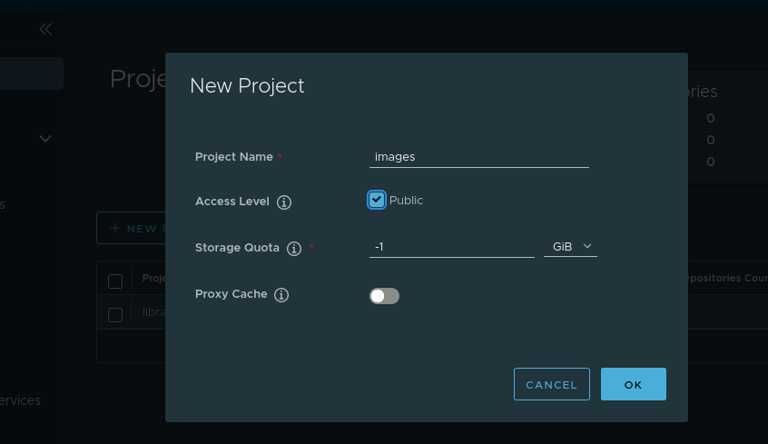

BRIX Helm can be installed in a private environment that has no access to the public container image registry. To do that, you first need to install a private registry, for example, Harbor.
Install the Harbor private registry
- On a computer with internet access, go to the Harbor releases page and download the harbor-offline-installer-vX.Y.Z.tgz archive:
wget https://github.com/goharbor/harbor/releases/download/vX.Y.Z/harbor-offline-installer-vX.Y.Z.tgz
- You need to copy the archive to the server that will be used to run the installation. Unpack the archive and open the catalog:
tar xzvf harbor-offline-installer-vX.Y.Z.tgz && cd harbor
- Copy the configuration example to the harbor.yml file:
cp harbor.yml.sample harbor.yml
- Open the harbor.yml configuration file for editing and make the necessary changes: edit the hostname, the HTTP and HTTPS ports, the admin password, the data_volume (location where images will be stored), the DB, etc. If you have a certificate, make sure the keys are at the specified locations.
vim harbor.yml
- Install docker and docker-compose if these packages are missing.
- Install Harbor using the following command:
sudo ./install.sh
- To get access to Harbor, enter the domain specified in the configuration file in a web browser (https://registry.example.com:443). Sign in using the username admin and the password set in harbor.yml.
- Create a new project in Harbor. To do that, go to Projects and click +New project.

- Enter the project’s name in lowercase letters (for example, images) and specify whether the project needs to be public. Click OK.

Upload BRIX images to the private registry
- On a computer with internet access, download and run the script that downloads the images (the total size of the files is ~5 GB).
curl -fsSL -o elma365-charts-offline.sh https://dl.elma365.com/onPremise/latest/elma365-charts-offline-latest && \
chmod +x elma365-charts-offline.sh && \
./elma365-charts-offline.sh --pull
Download links for other BRIX versions are provided in Links for downloading BRIX distribution packages.
- After downloading all the files, you need to copy the BRIX-X.Y.Z catalog to the server that will be used for installation.
- Open the BRIX-X.Y.Z catalog and upload the BRIX images to the private registry using the following command:
./charts-offline.sh --push --uri registry.example.com:443/images/BRIX --creds admin:Harbor12345
Install the BRIX-dbs package
- Open the BRIX-X.Y.Z/elma-dbs catalog. In the values-dbs.yaml file, in the image section, specify the parameters of the private registry for each DB:
# Address and secret for the private registry.
image:
registry: registry.example.com:443/images/BRIX
# Secret with access to the private registry needs to be created manually and encrypted in Base64.
pullSecrets:
- myRegistryKeySecretName
- Install the BRIX-dbs package. Read more about this in the Install BRIX to Kubernetes article.
Install the BRIX package
- Go to the BRIX-X.Y.Z/BRIX catalog. In the values-dbs.yaml file, in the image section, specify the parameters of the private registry:
# Address and secret for the private registry.
image:
registry: registry.example.com:443/images/BRIX
dockerRegistry: registry.example.com
# Secret with access to the private registry needs to be created manually and encrypted in Base64.
pullSecret:
- myRegistryKeySecretName
- Install the BRIX package. Read more about this in the Install BRIX to Kubernetes article.